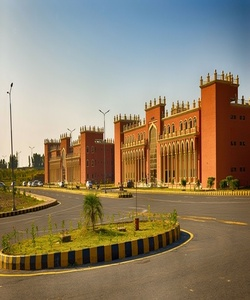

University Of Swabi (Pashto: د صوابی پوهنتون; Urdu: یونیورسٹی آف صوابی; abbreviated UoS), is a public sector university situated in Anbar, Swabi in Khyber Pakhtunkhwa, Pakistan.Currently, the university comprises of two campuses, old campus and main campus having a combined area of 188 acres nears M1 Motorway. There are 27 Academic Departments at University of Swabi. Currently more than 4000 students are enrolled in BS, Masters and MS/MPhil degree programs. There are one Boy’s, one Girl's and one Staff Hostel at the campus. The Central Library consists of more than 20,000 books of different disciplines.
